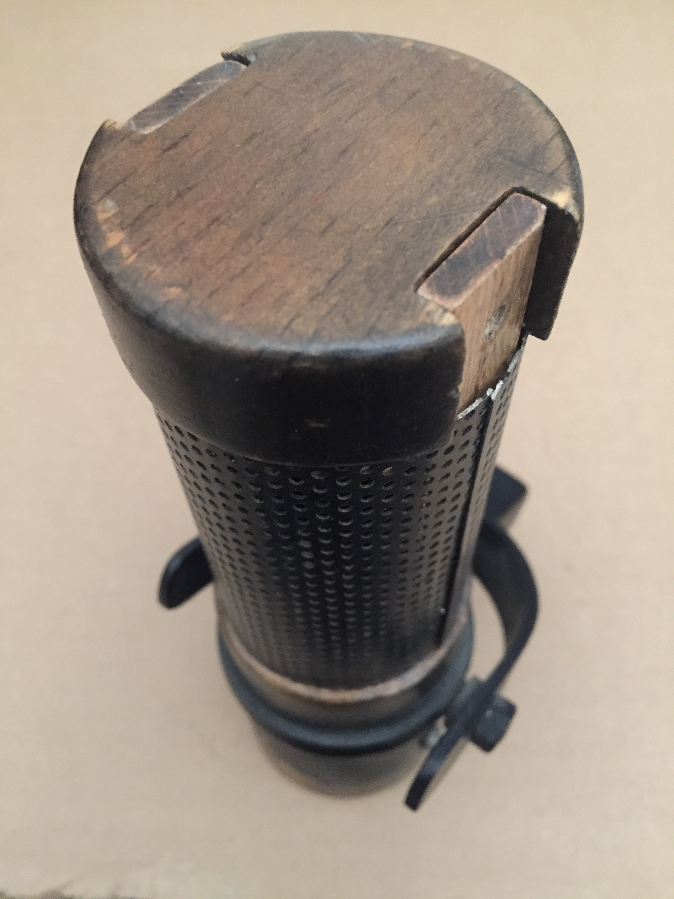
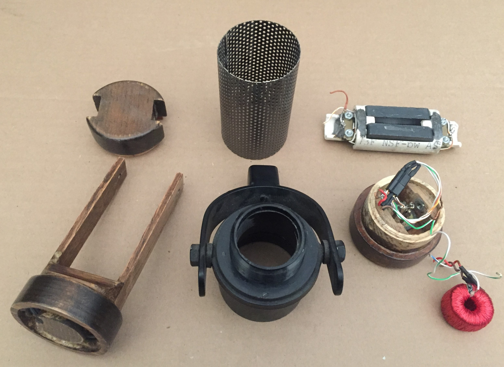
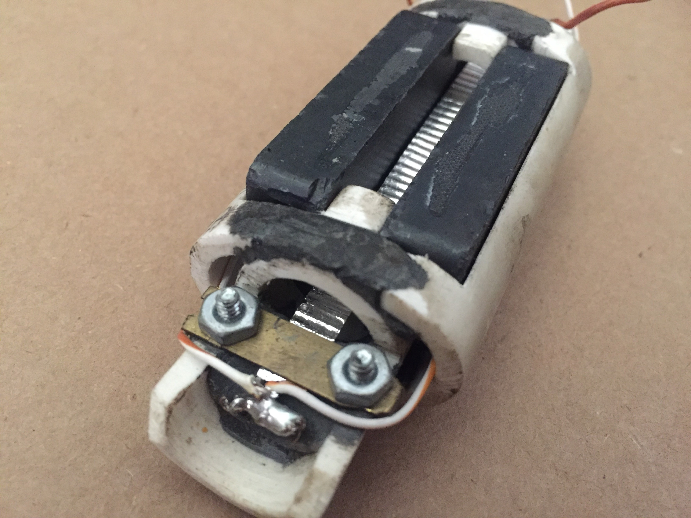
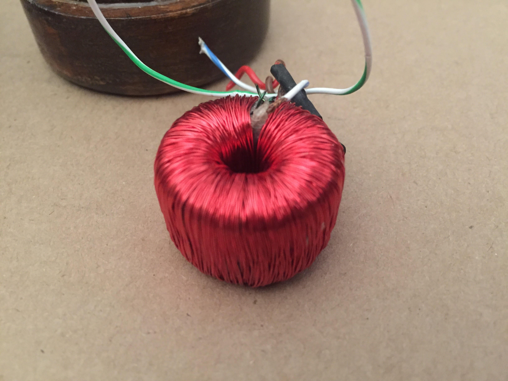

The second Newman: Christmas Newman
I finished this one in time to give it to my brother for the Christmas which followed my senior year of high school. This sucker is at least 2X as gorgeous as the Newman 1, and is made of at least 3X as many materials. I spent darn near close to zero dollars on this one, as it is made out of crap I already had on hand. I gained a modest amount of knowledge from the Newman 1 experience as well as the internet, so I was able to get rid of the buzz in this one by properly shielding the transformer I made. The output is still pretty darn low -- and there were two reasons for that -- three even.
Here are all the parts. more complicated than the last one, and actually the most mechanically ridiculous microphone I ever made. It's a wonder it came out looking so damn gorgeous.
Here we got a detail of the transducer. This is kind of absurd -- made from cut up PVC and 'Quick-Steel' epoxy putty. The magnets are the same ceramic blocks from Home Depot, and the clamp is made of some brass harvested from an old extension cord plug. Originally, the ribbon was the same household aluminum foil used in the wooden one, but it was since replaced with a very delicate and easily destroyed aluminum leaf element.
The shielding for this transformer has been removed so you can see my winding job. Sometimes I think about this transformer and I wonder -- why did I do that?

Here is my signature brazing rod XLR jack. This thing works just fine if it's clean.